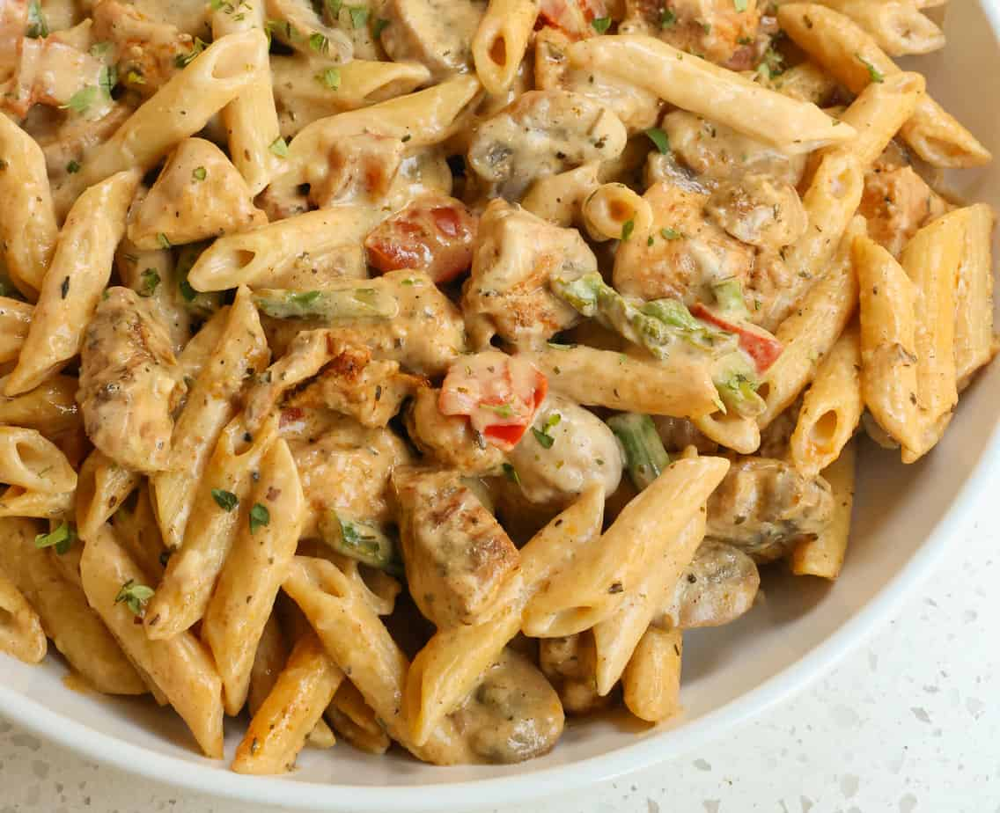

Cajun Pasta

Description
Inspired by MyProtein.
This cajun chicken pasta is a tasy way to get protein. Makes meal prep very easy.
Ingredients
- 1 tbsp. olive oil
- 1 diced red onion
- 200g sliced mushrooms
- 500g sliced chicken breast
- 1 tbsp. cajun seasoning
- Salt to taste
- 500g pasta
- 500ml chicken stock
- 100g light cream cheese
Steps
- Heat the olive oil in a large non-stick pan. Add the red onion, mushrooms, and pepper strips and cook for a few minutes until softened. Remove from the pan and set aside.
- Add a little more olive oil to the pan if necessary and then add your chicken pieces. Fry until completely cooked through and no longer pink, then add the beg back in along with the cajun seasoning and salt to taste. Stir well
- Add the pasta and chicken stock, cover the pan, and leave to simmer for 15 minutes
- Stir though the cream cheese to make a thick, creamy sauce. Serve hot.
Return home